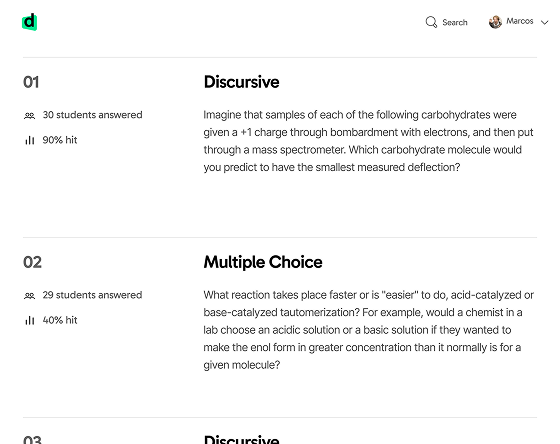
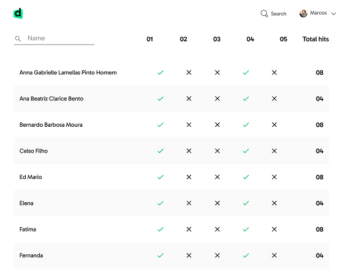

Descomplica is an edtech with online college pre-admission classes, graduation, and post-graduation.
Descomplica for Schools was a B2B branch focused on learning experiences for teachers, managers, and students.
A tool for teachers to create digital tests and training materials in minutes. The company had to conquer teachers' trust before selling to the schools.
The search tool was the first product created for Schools. Users interview were conducted daily — to map user's mental model and test prototypes.
Teachers would get an overview of how the class performed after the lesson and know exactly what needs review.


The search took two months to be launched: from user studies, design and implementation. It helped the BU to learn users' behavior and inform decisions for next steps.
✢ ✢ ✢